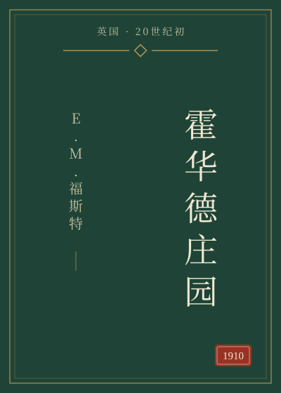

霍华德庄园
一、基本信息
| 作者 | E.M.福斯特 |
|---|---|
| 成书/出版 | 1910年（Britannica：Howards End (1910)——'brought Forster his first major success'） E.M. Forster — Encyclopaedia Britannica（百科全书） |
| 国别/地区 | 英国 |
| 时代 | 现当代 · 20世纪初 |
| 体裁 | 长篇小说 |
| 语言 | 英语 |
《霍华德庄园》连接结构图（主题·结构图）
二、创作背景
Britannica（B282）：Howards End——'a more ambitious novel that brought Forster his first major success'；主题——'an alliance between the Schlegel sisters, Margaret and Helen, who embody the liberal imagination at its best'，与 Ruth Wilcox 'whose house stays close to the earth'——对照'commerce-minded Wilcox family'。
作者（B282）：'The values of truthfulness and kindness dominate Forster's later thinking'。
三、内容脉络
施莱格尔姐妹与威尔科克斯家：文化/商业的联姻（B282 语境）。
'Only connect'（唯有连接——作者座右铭，通说待核）。
四、主要人物表
| 人物 | 身份 | 说明 |
|---|---|---|
| 玛格丽特 | 姐姐 | 'liberal imagination'（B282） |
| 海伦 | 妹妹 | （B282） |
| 亨利·威尔科克斯 | 商人 | （通说待核） |
五、主题与艺术特点
- '唯有连接'（通说待核——Only connect）。
- 文化与商业的婚姻（B282）。
- 房子与土地（B282：house stays close to the earth）。
六、影响与评论
- Britannica：'brought Forster his first major success'（B282）。
E.M. Forster — Encyclopaedia Britannica（百科全书） - Britannica：1992年 Merchant Ivory 电影改编（通说待核）。
E.M. Forster — Encyclopaedia Britannica（百科全书）
七、阅读建议
难点
- 爱德华时代阶级背景。
- '连接'的哲学。
- 《霍华德庄园》（人民文学出版社/上海译文版本，通说待核）。
- 英文原版（公有领域渐近）。
先本作后《印度之行》。
八、待核实
- 1910年出版（Edward Arnold说）核对。
- 施莱格尔/威尔科克斯人名核对。
- 1992年电影（Merchant Ivory）待核。
本页主要来源
E.M.福斯特的其他收录作品：印度之行